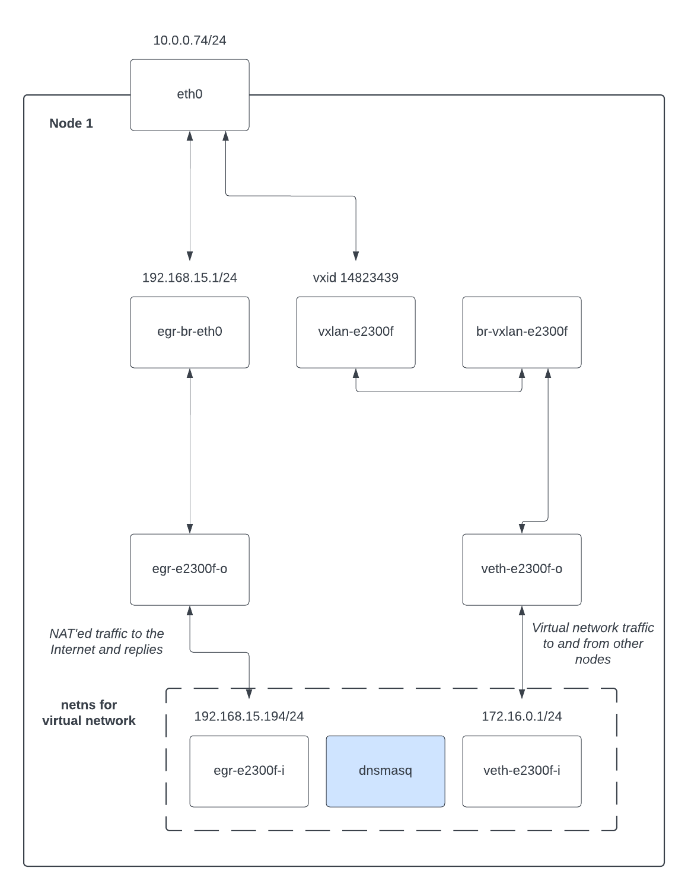
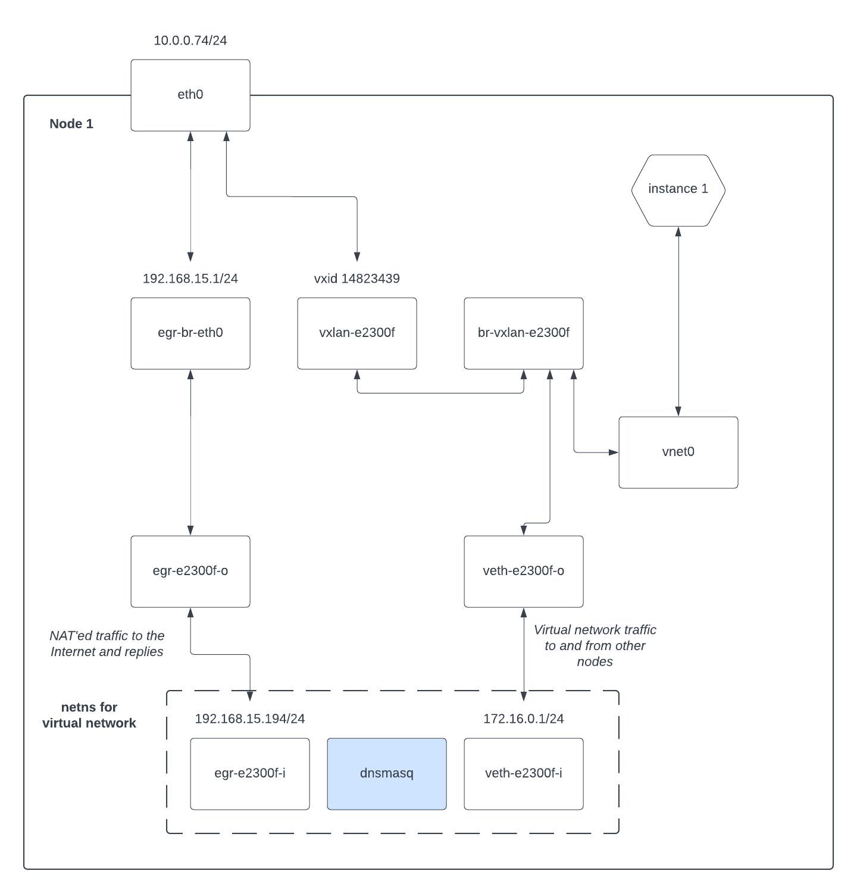
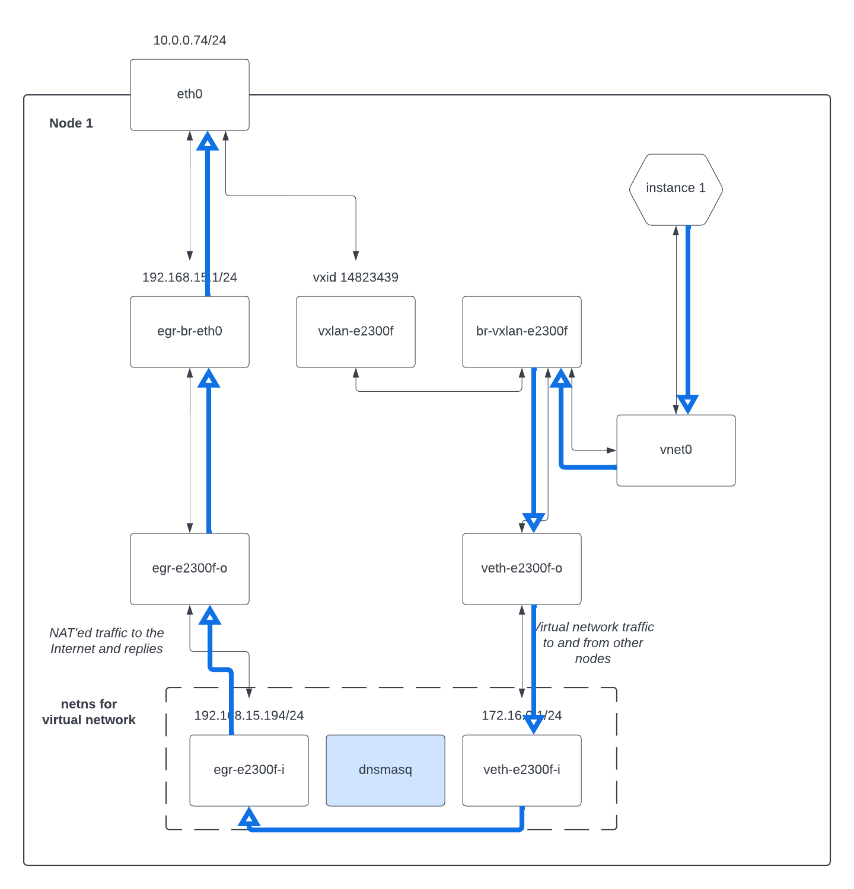
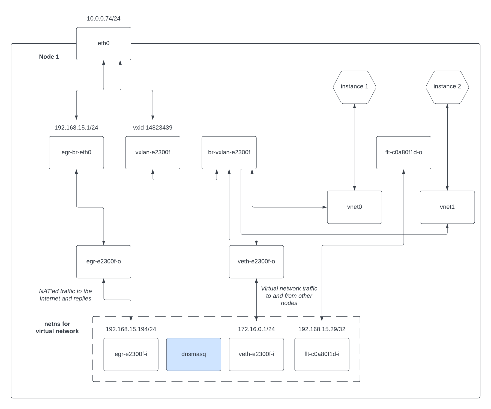
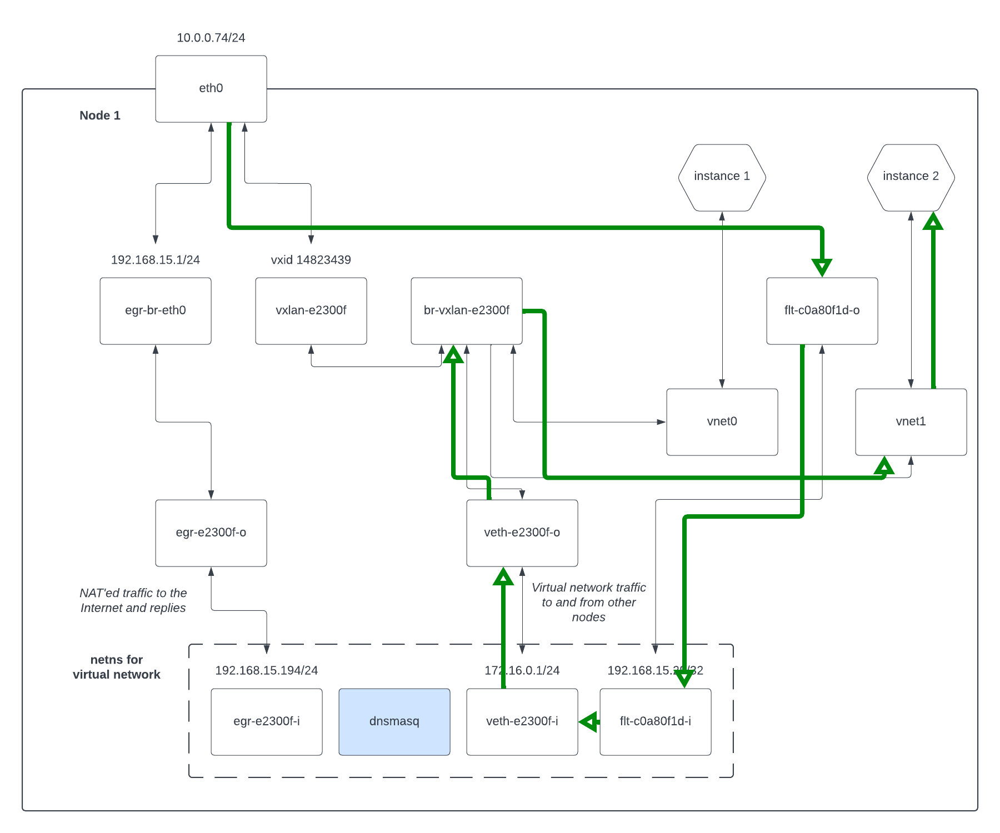
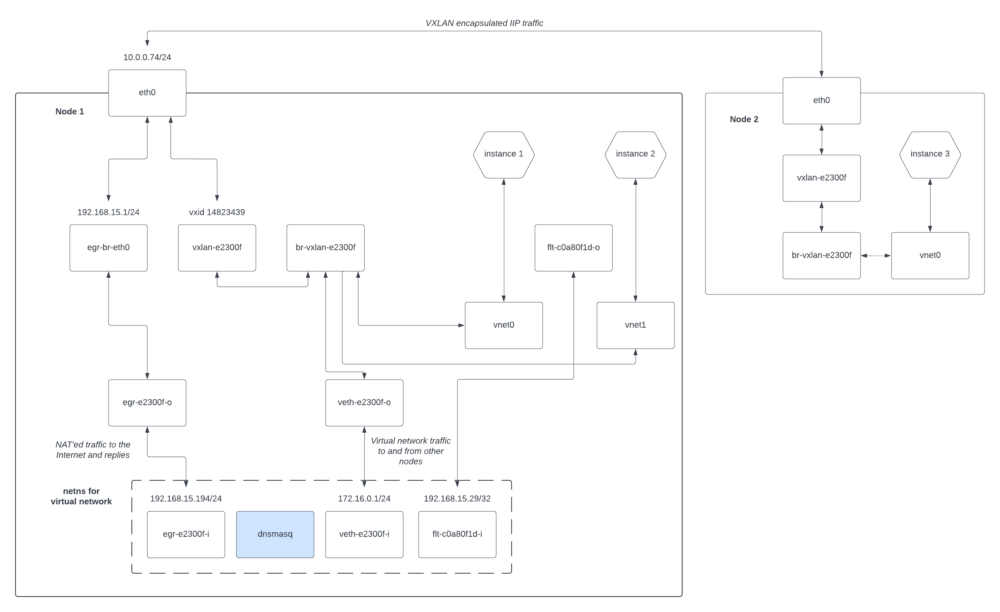

Explaining Shaken Fist networking
Shaken Fist networking is complicated, but not as complicated as OpenStack Neutron -- its more like the old OpenStack Compute nova-network implementation if you're looking for a mental model. Let's work through some examples to explain what it is doing.
Single node install, no networks or instances
debian@test:~$ ip a
1: lo: <LOOPBACK,UP,LOWER_UP> mtu 65536 qdisc noqueue state UNKNOWN group default qlen 1000
link/loopback 00:00:00:00:00:00 brd 00:00:00:00:00:00
inet 127.0.0.1/8 scope host lo
valid_lft forever preferred_lft forever
2: eth0: <BROADCAST,MULTICAST,UP,LOWER_UP> mtu 8950 qdisc pfifo_fast state UP group default qlen 1000
link/ether 02:00:00:00:0e:a3 brd ff:ff:ff:ff:ff:ff
altname enp0s11
altname ens11
inet 10.0.0.74/24 brd 10.0.0.255 scope global eth0
valid_lft forever preferred_lft forever
3: egr-br-eth0: <NO-CARRIER,BROADCAST,MULTICAST,UP> mtu 1500 qdisc noqueue state DOWN group default qlen 1000
link/ether f6:d1:c6:05:15:fd brd ff:ff:ff:ff:ff:ff
inet 192.168.15.1/24 scope global egr-br-eth0
valid_lft forever preferred_lft forever
Explaining this:
lois the loopback interface, and not relevant here.eth0is the primary interface for the machine, and10.0.0.74is the IP address of the machine.egr-br-eth0is a linux bridge that is currently empty and has the IP192.168.15.1, which is the first IP on this cluster's floating network. Networks will get attached
Single node install, one network and no instances
Let's make a network, but not put any instances on it yet:
debian@test:~$ sf-client network create demo 172.16.0.0/24
uuid : 17be6538-8f96-4ccb-b71e-a7e3022fead3
name : demo
vxlan id : 14823439
netblock : 172.16.0.0/24
provide dhcp : True
provide nat : True
floating gateway: 192.168.15.194
namespace : system
state : created
Metadata:
debian@test:~$ ip a
1: lo: <LOOPBACK,UP,LOWER_UP> mtu 65536 qdisc noqueue state UNKNOWN group default qlen 1000
link/loopback 00:00:00:00:00:00 brd 00:00:00:00:00:00
inet 127.0.0.1/8 scope host lo
valid_lft forever preferred_lft forever
2: eth0: <BROADCAST,MULTICAST,UP,LOWER_UP> mtu 8950 qdisc pfifo_fast state UP group default qlen 1000
link/ether 02:00:00:00:0e:a3 brd ff:ff:ff:ff:ff:ff
altname enp0s11
altname ens11
inet 10.0.0.74/24 brd 10.0.0.255 scope global eth0
valid_lft forever preferred_lft forever
3: egr-br-eth0: <BROADCAST,MULTICAST,UP,LOWER_UP> mtu 1500 qdisc noqueue state UP group default qlen 1000
link/ether f6:d1:c6:05:15:fd brd ff:ff:ff:ff:ff:ff
inet 192.168.15.1/24 scope global egr-br-eth0
valid_lft forever preferred_lft forever
10: vxlan-e2300f: <BROADCAST,MULTICAST,UP,LOWER_UP> mtu 8900 qdisc noqueue master br-vxlan-e2300f state UNKNOWN group default qlen 1000
link/ether 6a:c0:ee:6f:83:6f brd ff:ff:ff:ff:ff:ff
11: br-vxlan-e2300f: <BROADCAST,MULTICAST,UP,LOWER_UP> mtu 8900 qdisc noqueue state UP group default qlen 1000
link/ether 8a:a6:8d:31:c9:09 brd ff:ff:ff:ff:ff:ff
13: veth-e2300f-o@if12: <BROADCAST,MULTICAST,UP,LOWER_UP> mtu 8900 qdisc noqueue master br-vxlan-e2300f state UP group default qlen 1000
link/ether 6e:34:bc:25:68:c2 brd ff:ff:ff:ff:ff:ff link-netns 17be6538-8f96-4ccb-b71e-a7e3022fead3
15: egr-e2300f-o@if14: <BROADCAST,MULTICAST,UP,LOWER_UP> mtu 1500 qdisc noqueue master egr-br-eth0 state UP group default qlen 1000
link/ether 5a:9c:f3:eb:2f:bc brd ff:ff:ff:ff:ff:ff link-netns 17be6538-8f96-4ccb-b71e-a7e3022fead3
Here, we allocated a network, which was assigned VXLAN id 14823439 (e2300f in
hexadecimal). That created a VXLAN interface named vxlan-e2300f on the machine,
which is where other machines in a multinode cluster would attach for the VXLAN
mesh which forms our virtual network. br-vxlan-e2300f is a linux bridge used to
attach the local network namespace for this network to the VXLAN interface. That
is, the members of the bridge look like this:
debian@test:~$ sudo brctl show br-vxlan-e2300f
bridge name bridge id STP enabled interfaces
br-vxlan-e2300f 8000.8aa68d31c909 no veth-e2300f-o
vxlan-e2300f
Similarly, the egress bridge egr-br-eth0 now contains a veth as well:
debian@test:~$ sudo brctl show egr-br-eth0
bridge name bridge id STP enabled interfaces
egr-br-eth0 8000.f6d1c60515fd no egr-e2300f-o
And there is a linux network namespace named with the UUID of the network:
debian@test:~$ ls /var/run/netns/
17be6538-8f96-4ccb-b71e-a7e3022fead3
That linux network namespace contains the other ends of the veths:
debian@test:~$ sudo ip netns exec 17be6538-8f96-4ccb-b71e-a7e3022fead3 ip a
1: lo: <LOOPBACK> mtu 65536 qdisc noop state DOWN group default qlen 1000
link/loopback 00:00:00:00:00:00 brd 00:00:00:00:00:00
12: veth-e2300f-i@if13: <BROADCAST,MULTICAST,UP,LOWER_UP> mtu 1500 qdisc noqueue state UP group default qlen 1000
link/ether 36:da:87:ea:ce:16 brd ff:ff:ff:ff:ff:ff link-netnsid 0
inet 172.16.0.1/24 scope global veth-e2300f-i
valid_lft forever preferred_lft forever
inet6 fe80::34da:87ff:feea:ce16/64 scope link
valid_lft forever preferred_lft forever
14: egr-e2300f-i@if15: <BROADCAST,MULTICAST,UP,LOWER_UP> mtu 1500 qdisc noqueue state UP group default qlen 1000
link/ether d2:b0:c8:31:f4:83 brd ff:ff:ff:ff:ff:ff link-netnsid 0
inet 192.168.15.194/24 scope global egr-e2300f-i
valid_lft forever preferred_lft forever
inet6 fe80::d0b0:c8ff:fe31:f483/64 scope link
valid_lft forever preferred_lft forever
This network namespace exists to contain a dnsmasq process providing DHCP to
the virtual network, as well as to contain routing and iptables rules for mangling
traffic into and out of the virtual network.
Specifically, NAT for traffic from the virtual network to the outside world is implemented with routing and iptables like this:
debian@test:~$ sudo ip netns exec 17be6538-8f96-4ccb-b71e-a7e3022fead3 ip route
default via 192.168.15.1 dev egr-e2300f-i
172.16.0.0/24 dev veth-e2300f-i proto kernel scope link src 172.16.0.1
192.168.15.0/24 dev egr-e2300f-i proto kernel scope link src 192.168.15.194
debian@test:~$ sudo ip netns exec 17be6538-8f96-4ccb-b71e-a7e3022fead3 iptables -L -t nat
Chain PREROUTING (policy ACCEPT)
target prot opt source destination
Chain INPUT (policy ACCEPT)
target prot opt source destination
Chain OUTPUT (policy ACCEPT)
target prot opt source destination
Chain POSTROUTING (policy ACCEPT)
target prot opt source destination
MASQUERADE all -- 172.16.0.0/24 anywhere
So, the default route is via the egress veth at egr-e2300f-i (inside the
namespace), which comes out on egr-br-eth0 (outside the namespace) to be routed
as normal. Traffic to other machines participating in this virtual network (that
is, with the same VXLAN id configured), is routed to veth-e2300f-i (inside the
namespace) which comes out on the br-vxlan-e2300f (outside the namespace) bridge
which is wired to the linux kernel VXLAN interface at vxlan-e2300f. Finally,
traffic to other floating IPs on 192.168.15.0/24 is routed to the egress
bridge as well.
The iptables MASQUERADE entry is there to convert internal addresses to the
external 192.168.15.194 "floating gateway" address so instances can talk outside
their virtual network.
Perhaps a diagram would help!

Single node install, one network and one instance with no floating IP
Now let's create a single instance on that network, with the instance specifically not having a floating IP:
debian@test:~$ sf-client instance create demo 1 1024 -d 10@debian:11 -n demo
uuid : 3b9c13ee-405f-4195-b904-cffb34e022d3
...
Interfaces:
uuid : afc470fb-8348-4711-8c16-be4c4662d705
network : 17be6538-8f96-4ccb-b71e-a7e3022fead3
macaddr : 02:00:00:bd:cd:9b
order : 0
ipv4 : 172.16.0.232
floating: None
model : virtio
...
There is only one new outer network interface created by adding the instance:
debian@test:~$ ip a
...
16: vnet0: <BROADCAST,MULTICAST,UP,LOWER_UP> mtu 8900 qdisc noqueue master br-vxlan-e2300f state UNKNOWN group default qlen 1000
link/ether fe:00:00:bd:cd:9b brd ff:ff:ff:ff:ff:ff
vnet0 is a libvirt construct to attach the virtual machine's network interface
to the host OS. We attach that interface to the bridge that is the virtual network
for this machine, in this case br-vxlan-e2300f:
debian@test:~$ sudo brctl show br-vxlan-e2300f
bridge name bridge id STP enabled interfaces
br-vxlan-e2300f 8000.8aa68d31c909 no veth-e2300f-o
vnet0
vxlan-e2300f
There are no changes to the inside of the network namespace for this VM -- the
dnsmasq process for example is already connected to the virtual network by
virtue of the veth-e2300f pair and can therefore provide DHCP to the instance.
Again perhaps a diagram will help:

This instance is not accessible from outside our virtual network as it does not
have a floating IP. It can however talk to the outside world because our virtual
network has NAT enabled. This is done by routing the traffic from vnet0 to the
virtual network's network namespace, where the iptables MASQUERADE rule will
then NAT the traffic out.
We can show this NAT traffic like this:

Single node install, one network and one instance with no floating IP
Let's add a second instance, but this time with a floating IP associated with it:
debian@test:~$ sf-client instance create floatingdemo 1 1024 -d 10@debian:11 -f demo
uuid : 08c0ae07-6a4b-4f63-9d50-a172039091a0
...
Interfaces:
uuid : a4cfa174-cce9-4cda-907a-b90d7f54efd1
network : 17be6538-8f96-4ccb-b71e-a7e3022fead3
macaddr : 02:00:00:c7:f9:cc
order : 0
ipv4 : 172.16.0.37
floating: 192.168.15.29
model : virtio
...
Again we add a vnet device via libvirt:
debian@test:~$ ip a
...
17: vnet1: <BROADCAST,MULTICAST,UP,LOWER_UP> mtu 8900 qdisc noqueue master br-vxlan-e2300f state UNKNOWN group default qlen 1000
link/ether fe:00:00:c7:f9:cc brd ff:ff:ff:ff:ff:ff
19: flt-c0a80f1d-o@if18: <BROADCAST,MULTICAST> mtu 8900 qdisc noop state DOWN group default qlen 1000
link/ether aa:5c:1c:0c:7c:f6 brd ff:ff:ff:ff:ff:ff link-netns 17be6538-8f96-4ccb-b71e-a7e3022fead3
But we've also added another veth pair, this time named flt-c0a80f1d-o on the
outside of the network namespace. You can see in the instance details above that
the floating IP associated with this instance is 192.168.15.29, which just so
happens to be c0a80f1d in hexadecimal. So this veth is how floating IP traffic
is delivered to an instance.
Here's another diagram showing the new setup:

Its important to note that traffic from the instance still goes via the NAT route shown above, while traffic to the instance via the floating IP uses this veth. Replies to floating IP requests return via this veth as well though.
The instance isn't aware of its floating IP at an operating system level at all. That is, inside the network namespace the veth attaches to, we do DNAT to mangle the traffic to the instance:
debian@test:~$ sudo ip netns exec 17be6538-8f96-4ccb-b71e-a7e3022fead3 iptables -L -t nat
Chain PREROUTING (policy ACCEPT)
target prot opt source destination
DNAT all -- anywhere 192.168.15.29 to:172.16.0.37
Chain INPUT (policy ACCEPT)
target prot opt source destination
Chain OUTPUT (policy ACCEPT)
target prot opt source destination
Chain POSTROUTING (policy ACCEPT)
target prot opt source destination
MASQUERADE all -- 172.16.0.0/24 anywhere
So our floating IP of 192.168.15.29 is DNAT'ed to the instance's IP of
172.16.0.37. This means floating IP traffic "bounces" off the network namespace.
To make that work, the inside of the veth is configured with the floating IP:
debian@test:~$ sudo ip netns exec 17be6538-8f96-4ccb-b71e-a7e3022fead3 ip a
...
18: flt-c0a80f1d-i@if19: <BROADCAST,MULTICAST> mtu 1500 qdisc noop state DOWN group default qlen 1000
link/ether fe:cb:4c:4a:17:ef brd ff:ff:ff:ff:ff:ff link-netnsid 0
inet 192.168.15.29/32 scope global flt-c0a80f1d-i
valid_lft forever preferred_lft forever
Note the /32 netmask for that address assignment. Notably, the routing table
for the outer linux still looks like this:
debian@test:~$ ip route
default via 10.0.0.1 dev eth0
10.0.0.0/24 dev eth0 proto kernel scope link src 10.0.0.74
192.168.15.0/24 dev egr-br-eth0 proto kernel scope link src 192.168.15.1
The outer linux knows to route the floating IP down that veth because of this address assigned on the inside of the namespace.
Let's have a final diagram showing how a packet for a floating IP gets to its instance:

Multiple nodes
Its actually a relatively small step from the above to multiple hypervisor nodes, as additional nodes don't have the network namespace or the veths -- those exist only on the network node (node 1 in our example).

Routed IPs
Shaken Fist v0.8 introduced the concept of routed IPs to support Kubernetes services in the K3S orchestration support. A routed IP is an address from the floating address pool which uses routing to deliver traffic to the relevant virtual network. An interface on the virtual network must then have been configured by the user to answer ARP requests for that address. This works well with metallb, which our K3S orchestration uses to expose services, but would work equally well for other traffic.
Tip
The fundamental difference between a floating IP and a routed IP is whether the destination of the traffic inside the virtual network is aware of the address. A floating IP is packet mangled on its way to an interface so that the interface can't tell that the traffic was sent to a floating IP. On the other hand, an interface with a routed address can tell that the traffic was intended for a specific floating IP, but in return must have been configured to use that floating IP.
The implementation of routed IPs is relatively trivial. For each routed IP, a route on the network node into the relevant virtual network bridge is created. Such a route might look like this:
ip route add 192.168.15.29/32 dev br-vxlan-e2300f